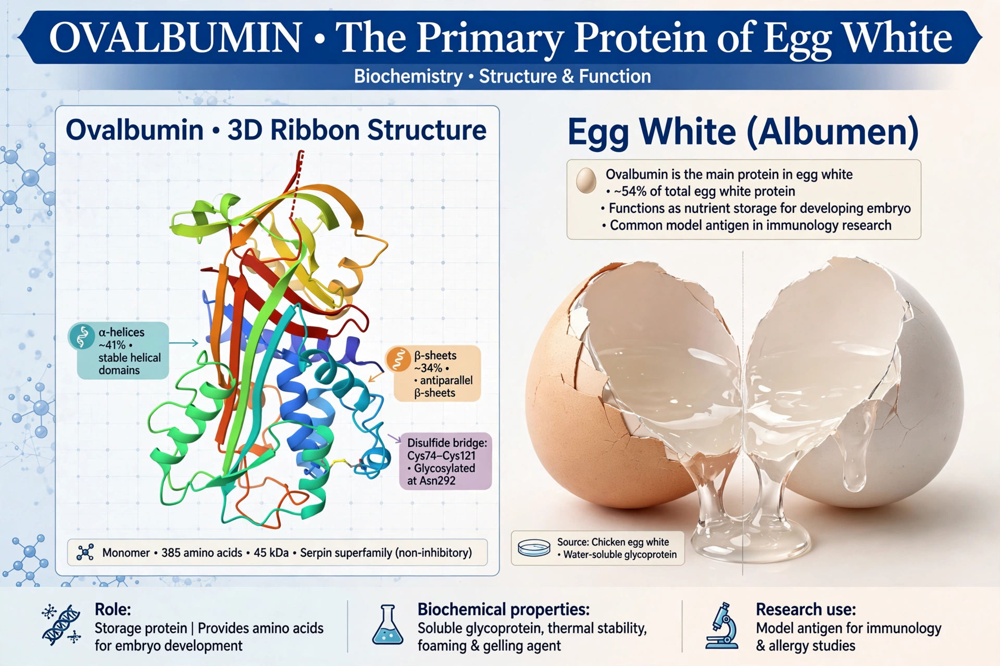

Ovalbumin is the main storage protein in egg white, making up about 54% of its protein content. It is a serpin-family glycoprotein, though unlike most serpins it does not inhibit proteases.
On heating, ovalbumin denatures and gels, giving egg white its set texture. Because it is abundant and easily purified, it is a model protein in biochemistry and a standard allergen in immunology research — injected ovalbumin is widely used to model allergic airway inflammation in mice — and it is a major egg allergy antigen (Gal d 2).